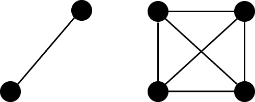
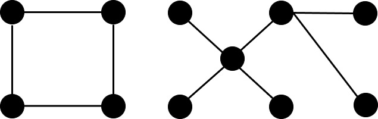

How to Play the Game
Introduction
Welcome to the "Game of Trees and Graphs"! This game is designed to introduce you to basic concepts of graph theory while having fun. You'll enhance your logical thinking and learn about combinations as you play.
Getting Started
Grab a pen and paper to begin. First, draw several dots (we call these vertices) and enumerate them. Keep it simple. Once done, add line segments connecting the vertices (we call these edges). Your drawing will resemble a graph.
Understanding Graph Components
A graph consists of connected components. For example, a graph above, with two separate groups of vertices is said to have two connected components. Vertices in the same connected component can be connected with a sequence of edges, while vertices in different components cannot.
What Are Trees?
A tree is a special type of graph with one connected component and no cycles. Cycles occur when you can start from one vertex, travel through a sequence of edges, and return to the starting vertex without retracing your steps.
Paths in a Graph
A path is a sequence of vertices connected by edges, where no vertex is repeated. For example, in a tree graph, the path 1 → 2 → 3 → 5 has a length of 3, as it crosses three edges.
Paths have different lengths, and the game involves identifying paths of various lengths.
In this case, this tree have 5 paths of length 0 (L0), menaing the vetices. It has 4 paths of lenght 1, namely edges 1 → 2, 2 → 3, 2 → 4, 3 → 5.
There are also four paths of length 2 (L2): 1 → 2 → 3, 1 → 2 → 4, 4 → 2 → 3, 2 → 3 → 5. Lastly, two paths of length three (L3) are present:
1 → 2 → 3 → 5 and 4 → 2 → 3 → 5. There are no longer paths than that. Therefore we can characterize the above graph with a sequence of numers:
(L0: 5, L1: 4, L2: 4, L3: 2).
The Game
The game challenges you to reconstruct trees from given path-length vectors. Each vector represents the number of paths of specific lengths in the tree.
For example, the vector {6, 5, 5, 3, 2} corresponds to a tree with 6 paths of length zero (vertices), 5 paths of length one (edges), 5
paths of length two, 3 paths of length three and 2 paths of lenth four.
How to Play
- Access tasks grouped by the number of vertices in the tree.
- For each task, use the provided vector to construct the tree.
- You can use matches, sticks, or anything at your disposal to create the graph.
- Once done, verify your solution by comparing it to the provided tree file.
Learning Outcomes
By playing this game, you'll gain a hands-on understanding of:
- Graphs, vertices, edges, and connected components
- Tree structures and their properties
- Graph isomorphism, which involves comparing graphs for equivalence